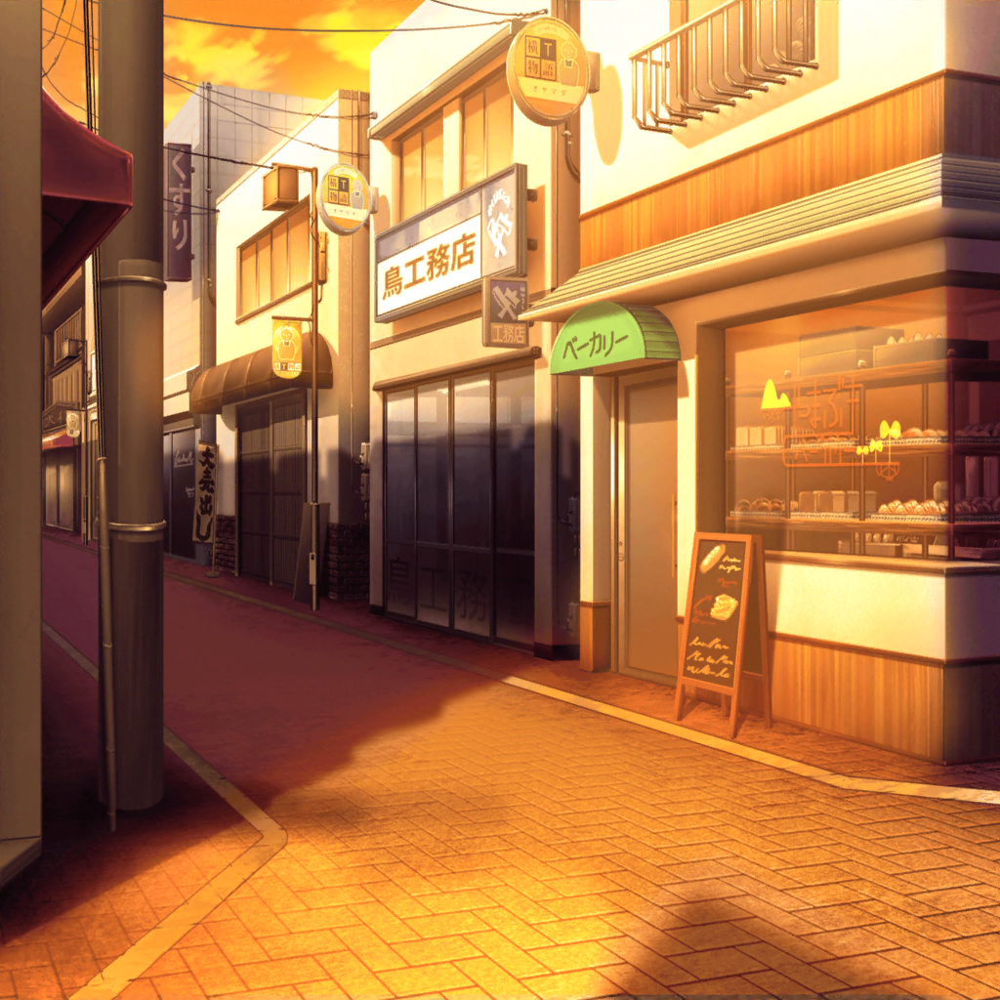
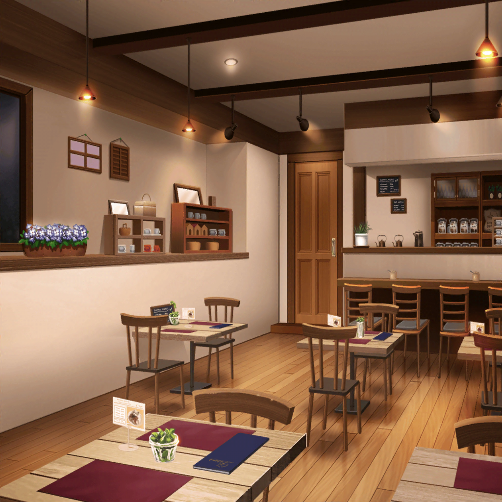

羽沢珈琲店
つぐみ
うーん……
お菓子教室かあ……
つぐみ
宣伝しておいてって言われても
いきなりじゃ、何をしたらいいかわからないよ……
つぐみ
お母さん、いつもいきなり言うからなあ。
開催日は今週末だし……もうちょっと早めに言ってくれれば、
蘭ちゃん達に相談できたんだけど……
つぐみ
えっと、確か今回の教室の目的は、
羽沢珈琲店の認知度アップと、
お客さんと交流を深めること、だったよね？
つぐみ
……うん！
お客さんとの交流は楽しそう！
えへへ、なんだかやる気出てきた！
つぐみ
よーし！
まずは告知のポスターを商店街に貼りに行こう！
つぐみ
結構な量だけど、
一生懸命やれば、すぐに終わるよね！
つぐみ
お母さ～ん！
それじゃあ、商店街に行ってくるね～！
お菓子教室前々日
つぐみ
確か明日がお菓子教室の申し込みを締め切る日だったよね？
今の段階で、どのくらいの応募があるのかな？
つぐみ
お母さん、レジの引き出しに
申し込み書を入れてあるって言ってたはずだけど……
つぐみ
あ、あったあった！
……え？
もしかして……これ、全部申し込み書なのっ？
つぐみ
す、すごい量……
こんなにたくさん申し込んでもらえるなんて！
つぐみ
このままいったら、定員を超えるくらい人が来るかも……っ
つぐみ
これは私も気合いを入れて
当日、頑張らなくっちゃ！！

商店街
紗夜
今日の練習はなかなかよかったわね
燐子
そうですね……
ライブまで……あと少し……ですし……
紗夜
ええ。次の練習では、
もっと細かい部分まで気をつけ……あら？
燐子
……氷川さん？
ど……どうかしましたか……？
紗夜
いえ、このお店の窓にこんなものが……
燐子
お菓子作り教室の……ポスター……ですね
燐子
当日は……クッキー作り……
……少し……興味がある……かも……です
紗夜
白金さんが？
一体どうして？
燐子
クッキー、みたいな……手でさっとつまめる……お菓子の方が……
その……ゲーム中に……食べやすいので……
紗夜
そう……白金さんらしい理由ね
燐子
さ……最近は……今井さんが……
作ってきてくれる、クッキーを……食べて……
ゲームするのが……楽しみ、なんです……
紗夜
（……珍しいわね。
白金さんが、こんなに嬉しそうにするなんて……
それほど今井さんのクッキーを好んでるということね）
紗夜
（でも、確かに以前から今井さんのお菓子には、
人をホッとさせる効果があると思っていたわ）
紗夜
（おそらく今井さんの人柄も関係してるのだと思うけれど、
彼女の差し入れがいつもバンドの空気をよくしてくれる……）
燐子
氷川……さん……？
紗夜
（……私にもそういうお菓子が作れるかしら？
もし作れたら、きっとRoseliaにとっていい方向に……）
燐子
あの……氷川さん……？
ど……どうしたん、ですか……？
紗夜
あ……いえ、なんでもないわ
紗夜
それよりも、そろそろ暗くなってきたわ。
帰りましょう
燐子
は……はい……

お菓子教室前日
羽沢珈琲店
つぐみ
え～っと、この材料をこの容器に入れておいて、
こっちの材料はこの容器に……
つぐみ
よし、これで準備はバッチリ！
つぐみ
……ふぅ、いよいよ明日かぁ。
今日も、締め切り直前に応募があったみたいだし、
思った以上に反響があったみたいだなぁ……
つぐみ
勢いでOKしちゃったけど、ちゃんとできるかなあ。
なんか、今さら不安になってきちゃった……
つぐみ
……って、ううんっ！
やる前からこんなんじゃダメだよね！
何事も、チャレンジが大事だもん！！
つぐみ
よし、頑張ろうっ！